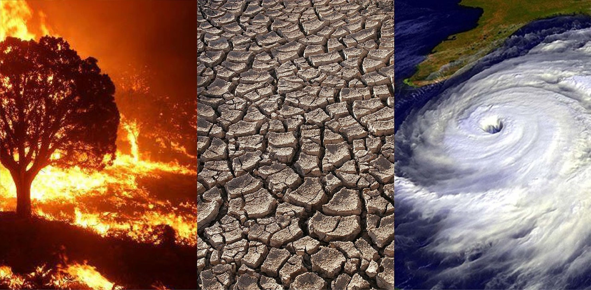

How does it affect us?
Climate change affects us in many ways According to National Oceanic and Atmospheric Administration: "Climate change impacts our society in many different ways. Drought can harm food production and human health. Flooding can lead to spread of disease, death, and damage ecosystems and infrastructure. Human health issues that result from drought, flooding, and other weather conditions increase the death rate, change food availability, and limit how much a worker can get done, and ultimately the productivity of our economy."

The effects that climate change can have on out water can result in a huge impact on the planet and everyone on it. As temperature rises, levels of precipitation falls as well. Our supply of food is also dependent on the climate. Woth higher temperatures, drought, disease and extreme weather, challenges emerge for farmers and ranchers, who provide most of our food.